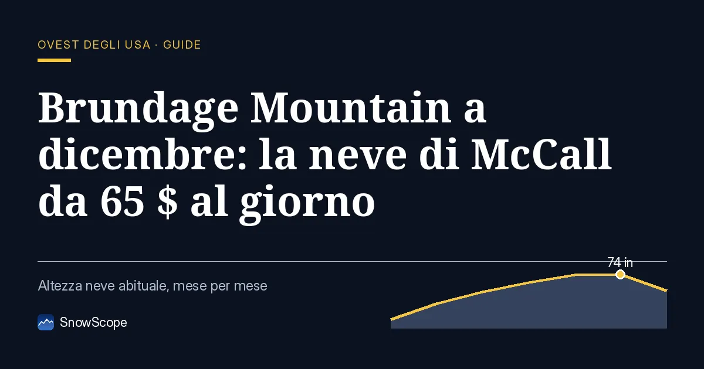

Brundage Mountain a dicembre: la neve di McCall da 65 $ al giorno
Brundage, sopra la città lacustre di McCall, è una delle stazioni di inizio stagione più affidabili dell'Idaho secondo la nostra serie storica della neve, e i suoi biglietti partono da appena 65 $. Il trucco è comprare presto e stare lontani dalle settimane festive.
Le previsioni neve in tempo reale per Brundage Mountain nell'app SnowScopeAltezza neve, allerte powder e mappa 3D, gratis.
Il lago sotto, la neve sopra
McCall si affaccia sul lago Payette, e Brundage si alza appena a nord della città. Sulla nostra mappatura ha 6 impianti e circa 30 mi (49 km) di piste tra circa 5.880 ft (1.792 m) e 7.600 ft (2.318 m). È una montagna per gente del posto, e infrasettimana è tranquilla.

Come funziona il prezzo
Brundage vende biglietti dinamici: partono da appena 65 $ in alcuni giorni, e i prezzi salgono man mano che si avvicina la data della visita. Il picco festivo va dal 19 dicembre 2026 al 3 gennaio 2027, periodo in cui non bisogna aspettarsi i prezzi più bassi.
Brundage è anche nella lista dell'Indy Pass. L'Indy Base Pass costa 419 $ e l'Indy+ Pass, senza date di blackout, 469 $; ciascuno dà due giorni in ogni stazione aderente.

Dicembre, settimana per settimana
La neve persistente di solito raggiunge mezza montagna, intorno a 6.740 ft (2.055 m), a metà ottobre. La quota di inverni con buona neve lì (una media settimanale di 20 in, 50 cm, o più) è del 67 % nella prima settimana di dicembre, 85 % nella seconda, 93 % nella terza e 96 % nella settimana di Natale.
In date precise, un tipico 1° dicembre ha 22 in (55 cm) a mezza montagna, il 15 dicembre 30 in (77 cm) e il giorno di Natale 38 in (97 cm). Il 15 dicembre, ogni inverno della nostra serie storica aveva almeno 10 in (25 cm) a mezza montagna, e l'87 % aveva 20 in o più. Un dicembre magro lasciava comunque 19 in (48 cm).
Brundage, Schweitzer o Lookout?
Schweitzer ha neve più profonda in cima, 54 in (138 cm) in un tipico 15 dicembre, e un 3-Pack a 249 $. Lookout Pass vende biglietti infrasettimanali a 63 $ con prenotazione e aveva 30 in (75 cm) a mezza montagna in un tipico 15 dicembre.
Brundage eguaglia Lookout sulla neve a mezza montagna ed è un po' più costante alla base: 22 in (57 cm) in un tipico 15 dicembre, con il 65 % degli inverni sopra i 20 in lì.
L'angolo onesto
L'inizio stagione si è un po' assottigliato: 33 in (83 cm) a mezza montagna in un tipico 15 dicembre nei primi 15 inverni della nostra serie storica, 24 in (61 cm) negli ultimi 15, con il 93 % e poi l'80 % degli inverni sopra i 20 in. Lo scorso inverno aveva 19 in (47 cm) a quella data.
Consigli per sciatori
- Comprate il prima possibile: i prezzi di Brundage salgono man mano che si avvicina la data.
- Sciate tra la seconda settimana di dicembre e il 18 dicembre per buone probabilità prima dei prezzi festivi.
- La strada da Boise segue il canyon del fiume Payette: mettete in conto il tempo e portate le catene.
- McCall ha i letti e il cibo; Brundage ha un tragitto breve e un parcheggio mattutino.
Riferimenti e crediti
- Brundage Mountain, daily lift tickets (official) brundage.com/daily-lift-tickets/
- Indy Pass, shop 2026-27 (official) www.indyskipass.com/shop
- Schweitzer, lift ticket 3-Pack 2026/2027 (official) www.schweitzer.com/plan-your-trip/deals-and-packages/lift-ticket-3pack
- Lookout Pass, lift tickets 2026-2027 (official) skilookout.com/lift-tickets/
- OpenSkiMap (mapped lifts and runs) openskimap.org/
- avalanche.org, US avalanche centers and forecasts avalanche.org/
Su questi numeri
Numeri della neve: storico neve SnowScope, 46 inverni passati (1980-81 - 2025-26) alle quote indicate (base, metà, vetta), una ricostruzione della neve passata per un'area corretta per la quota (basata su ERA5-Land; Snow_Hydro 1 km per il Marocco), non i bollettini della località. Neve attuale: la mappa SnowScope. Impianti, piste e quote: mappatura OpenSkiMap. Prezzi: le pagine ufficiali elencate qui sotto, lette il 13 novembre 2026; i prezzi dinamici cambiano con la data e la domanda.
Bollettini valanghe ufficiali: avalanche.org (US national portal)
Cita questo articolo
Per ricerca, didattica o stampa: numeri e grafici sono liberamente riutilizzabili con licenza CC BY 4.0 citando così.
SnowScope (2026), Brundage Mountain a dicembre: la neve di McCall da 65 $ al giorno, https://snowscope.app/blog/it/2026/11/brundage-mountain-mccall-december-ski-budget.html, consultato il 2026-11-14
SnowScope (Atlas Labs). (2026, November 14). Brundage Mountain a dicembre: la neve di McCall da 65 $ al giorno. SnowScope snow reports. https://snowscope.app/blog/it/2026/11/brundage-mountain-mccall-december-ski-budget.html
BibTeX
@misc{snowscope2026brundagemountainmccallde,
author = {{SnowScope (Atlas Labs)}},
title = {Brundage Mountain a dicembre: la neve di McCall da 65 $ al giorno},
year = {2026},
month = nov,
howpublished = {\url{https://snowscope.app/blog/it/2026/11/brundage-mountain-mccall-december-ski-budget.html}},
note = {Published 2026-11-14 20:07 UTC; accessed 2026-11-14}
}· CC BY 4.0 · Metodi, dati e strumenti →
Brundage Mountain: neve e temperatura per quota, quest'inverno vs lo scorso (strumenti) →
Segui Brundage Mountain
Gratis: un messaggio quando arriva la neve e il meteo ogni mattina.